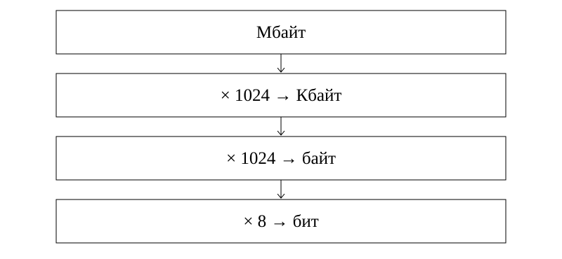

Өлшемдерді түрлендіру және көлем есептері
1. Оқу мақсаттары
Бит, байт және ірі бірліктерді түрлендіру
Мәтін мен растр көлемін есептеу
Тасымалдау уақытын бірліктермен тексеру
2. Алдын ала білу қажет
U1.1
Бөлшектер
Көбейту реті
3. Негізгі теория
Түрлендіру бағыты
Ірі бірліктен кішіге көшкенде сан өседі, сондықтан көбейтеміз. Кіші бірліктен іріге көшкенде бөлеміз. Байт пен бит арасындағы көбейткіш 8, ал осы курстың көршілес ірі екілік бірліктері арасындағы көбейткіш 1024. Бұл курстың есептерінде, өзгеше айтылмаса, 1 Кбайт = 1024 байт, 1 Мбайт = 1024 Кбайт, 1 Гбайт = 1024 Мбайт. Бұл екілік есептеу келісімі. KiB, MiB, GiB белгілері осы екілік еселіктерді бірмәнді көрсетеді. Ондық kB = 1000 байт, MB = 1 000 000 байт деп берілген есепте сол шартты қолданыңыз.
Дереккөз: S2:13; E1
Мәтіннің таза көлемі
Тұрақты кодтау кезінде I = K × i. Егер P бет, әр бетте L жол, әр жолда S таңба болса, K = P × L × S. i битпен берілсе, нәтиже битпен шығады. Есепте бос орындар таңба санына кіреді деп берілген болса, қайта қоспаңыз. Қызметтік деректер есепке алынбайтыны нақты айтылуы керек.
Дереккөз: S2:14; S3:9-10
Растрдың таза көлемі
W × H өлшемді растрда W × H пиксель бар. Әр пиксельге d бит бөлінсе, I = W × H × d бит. Бұл сығылмаған пиксель деректерінің моделі. Файл тақырыбы, палитра және басқа қызметтік деректер берілмесе, оларды осы есепке қоспаймыз.
Дереккөз: S2:14
Тасымалдау уақыты
Жылдамдық v бит/с және көлем I бит болса, t = I ÷ v секунд. Өлшемдерді келістірмей бөлуге болмайды. Мысалы, байтты бит/с-ке бөлер алдында 8-ге көбейтіңіз. Бұл тұрақты пайдалы жылдамдық моделі, байланыс шығындары бөлек берілмесе ескерілмейді.
Дереккөз: S1:6
4. Терминдер
Ірі бірліктен кішіге қалай өтеміз?
Тиісті көбейткішке көбейтеміз.
Мәтін көлемі?
K × i бит.
Растр көлемі?
W × H × d бит.
Тасымалдау уақыты?
t = I ÷ v, бірліктерді келістіргеннен кейін.
5. Сызба

Сызба ірі бірліктен кішіге түрлендіруді көрсетеді. Кері бағытта сол көбейткіштерге бөлу керек.
Осы сабаққа жаңадан жасалған сызба.6. Қадамдық мысалдар
2,5 Мбайтты Кбайтқа айналдырыңыз.
- Ірі бірліктен кішіге көшеміз.
- 2,5 × 1024 = 2560 Кбайт.
- 2560 ÷ 1024 = 2,5 Мбайт.
12 бет, 25 жол/бет, 40 таңба/жол, 16 бит/таңба. Таза көлемі?
- K = 12 × 25 × 40 = 12 000 таңба.
- I = 12 000 × 16 = 192 000 бит.
- 192 000 ÷ 8 = 24 000 байт.
256 × 128 растр, 8 бит/пиксель. Қызметтік дерек жоқ.
- 256 × 128 = 32 768 пиксель.
- 32 768 × 8 = 262 144 бит.
- 32 768 байт ÷ 1024 = 32 Кбайт.
Жазылым үлгісі
I = W × H × d (бит)
t = I / v (секунд)7. Салыстыру кестесі
| Өту | Әрекет |
|---|---|
| байт → бит | × 8 |
| бит → байт | ÷ 8 |
| Мбайт → Кбайт | × 1024 |
| Кбайт → Мбайт | ÷ 1024 |
| Көлем → уақыт | I ÷ v, бірліктері бірдей |
8. Жиі кездесетін қателер
Биттен байтқа өткенде 1024-ке бөлу: бұл жерде 8 қажет.
Аралық нәтижені ерте дөңгелектеу: соңына дейін дәл мәнді сақтаңыз.
Құрылғы сыйымдылығының ондық белгісін шартсыз екілік деп қабылдау.
9. A, B, C деңгейіндегі тапсырмалар
A деңгейі
5 Кбайтты байтқа айналдырыңыз.
Шешімін тексеру
5 × 1024 = 5120 байт.
B деңгейі
64 × 64 растр, 8 бит/пиксель. Таза көлемі неше Кбайт?
Шешімін тексеру
64 × 64 × 8 ÷ 8 = 4096 байт = 4 Кбайт.
C деңгейі
3 Мбайт бос орынға 450 Кбайттан неше толық файл сыяды?
Шешімін тексеру
3072 ÷ 450: 6 толық файл. 7 × 450 = 3150 Кбайт, сыймайды.
10. Өзін-өзі тексеру
Бұл 15 сұрақ бір дұрыс жауапты авторлық жаттығулар. Әр сұрақта бес нұсқа бар. A/B/C бойынша 5/5/5 үлесі оқу үшін таңдалды. Ресми ҰБТ нұсқасының толық көшірмесі емес: 2026 спецификациясында 25 жеке бір жауапты, контекстегі 5 бір жауапты, 5 бір немесе бірнеше жауапты және 5 сәйкестендіру тапсырмасы бар. Ресми күрделілік үлесі 50/30/20, бұл жинақта 5/5/5.
Алғашқы жауап есепке алынады. Барлық нұсқаның түсіндірмесі тексергеннен кейін ашылады.
11. Жауаптарды талдау
Әр тест жауабынан кейін дұрыс жауаптың шешімі көрсетіледі. «Барлық нұсқаның түсіндірмесі» арқылы төрт қате нұсқаның себебін қараңыз. Толық жауап кілті баспа оқулықта да бар.
12–15: аралас тапсырмаларға өтіңіз. 8–11: қате тақырыптарды қайталаңыз. 0–7: теория мен мысалдарға оралыңыз. Бұл оқу бағдары, ресми баға емес.
12. Қысқаша қорытынды
Байт пен бит арасындағы көбейткіш 8.
Екілік ірі бірліктер арасында 1024 қолданылады.
Көлем, жылдамдық және уақыт есептерінде бірліктерді тексеріңіз.
13. Қайталау карточкалары
Ірі бірліктен кішіге қалай өтеміз?
Тиісті көбейткішке көбейтеміз.
Мәтін көлемі?
K × i бит.
Растр көлемі?
W × H × d бит.
Тасымалдау уақыты?
t = I ÷ v, бірліктерді келістіргеннен кейін.
14. Дереккөздер
S1. Р.А. Қадырқұлов, Ә.Д. Рысқұлбекова, Г.К. Нұрмұханбетова. Алматыкітап, 2023. 1.pdf, беттер: 6.
S2. С.Т. Мұхамбетжанова, А.С. Тен, Л.Г. Дедмедова. Атамұра, 2021. 2.pdf, беттер: 13, 14.
S3. Г.И. Салғарева, А.С. Маханова, Л.А. Расина. Арман-ПВ, 2021. 3.pdf, беттер: 9, 10, 14, 15.
NIST: Binary prefixes: Екілік және ондық еселіктерді ажырату
Unicode FAQ: UTF-8, UTF-16, UTF-32: Бір таңба әрдайым бір байт емес
ҰТО: 2026 информатика спецификациясы: Ресми тапсырма түрлері мен күрделілік үлесі
Түсіндірмелер, тапсырмалар және сызба жаңадан жасалды. Оқулық суреттері көшірілген жоқ. Толық шығу тегі: sources.json.